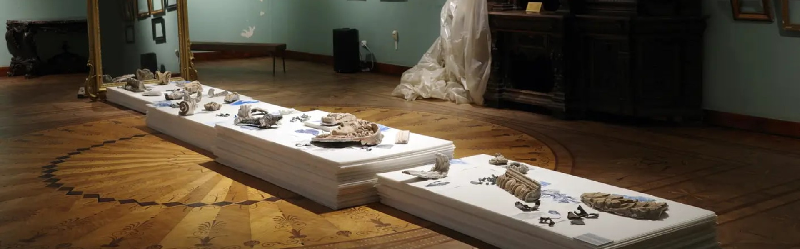
Remembering the Oblivion. How the Odesa National Fine Arts Museum rescued its collection from the Russian attack
29.06.26
Shattered windows, damaged walls, and ruined administrative building and roof — these were the first consequences of the Russian strike on the Odesa National Fine Arts Museum in 2023. In 2026, the building is still under renovation; construction workers are restoring the facade and reinforcing the walls, ceiling, and windows.
When we enter the museum, an air raid alert is on over the whole Ukrainian territory: another massive Russian attack is underway. A couple of hours earlier, drones were heading to Odesa, but this time they passed the 19th-century building where, before the full-scale invasion, visitors could see works by prominent artists who lived in Ukraine, including Ivan Aivazovskyi, Arkhyp Kuindzhi, and Mykola Pymonenko.
According to the original
Before the full-scale invasion, the museum decided to evacuate its collection if combat broke out. “The museum took down the collection in the first days of the full-scale invasion. We had prepared for it beforehand. Then it felt a bit like panic, but the museum’s administration had agreed on the evacuation routes and purchased packaging materials in advance. So the main thing was to take down the works, pack them, start doing all of that,” Oleksii Voronko, the Manager for Digitization and Grant Activities, says.
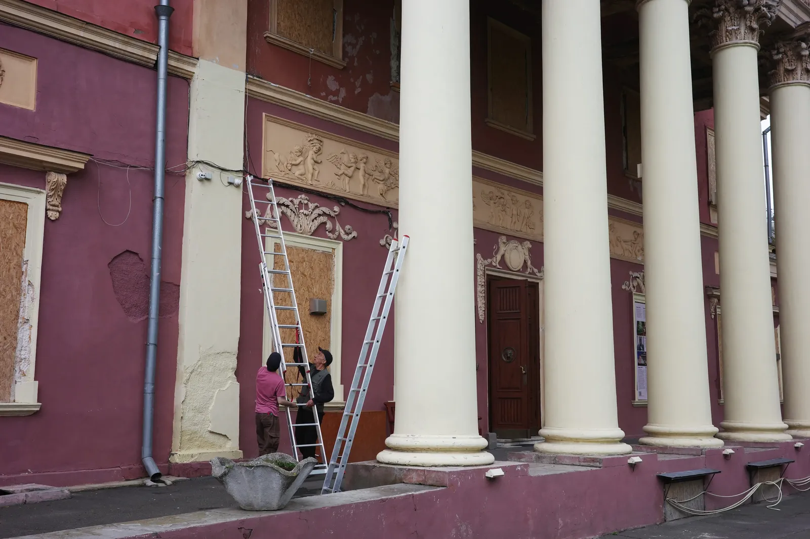
The museum administration decided right away to take the collection out; the possibility of keeping valuable exhibits on the premises, even in a basement, was out of the question. “It doesn’t guarantee preservation; besides, we are located next to the port,” Oleksii adds.
The last preparations, though, had to be done literally in the night when the invasion started. “We understood that combat would break out at any moment, but, like all the Ukrainians, we didn’t know when exactly it would happen. We were unsure what to do: to stay and finish the remaining work, or to delay it. At 2 a.m., we finished, and at 6 a.m.¹, museum employees and artists were on site and knew what to do: how to take down the exhibition and where to take it,” scientist Volodymyr Damaskin remembers.
The evacuation of the collection, comprising more than 11,000 items, was divided into four stages. First, the most valuable items were moved out — like Aivazovskyi and Kuindzhi — and the last batch was fully secured only by the end of 2025. It took a long time because it’s important to document the exhibits and monitor and record where and how they are stored. And the packaging itself is lengthy.
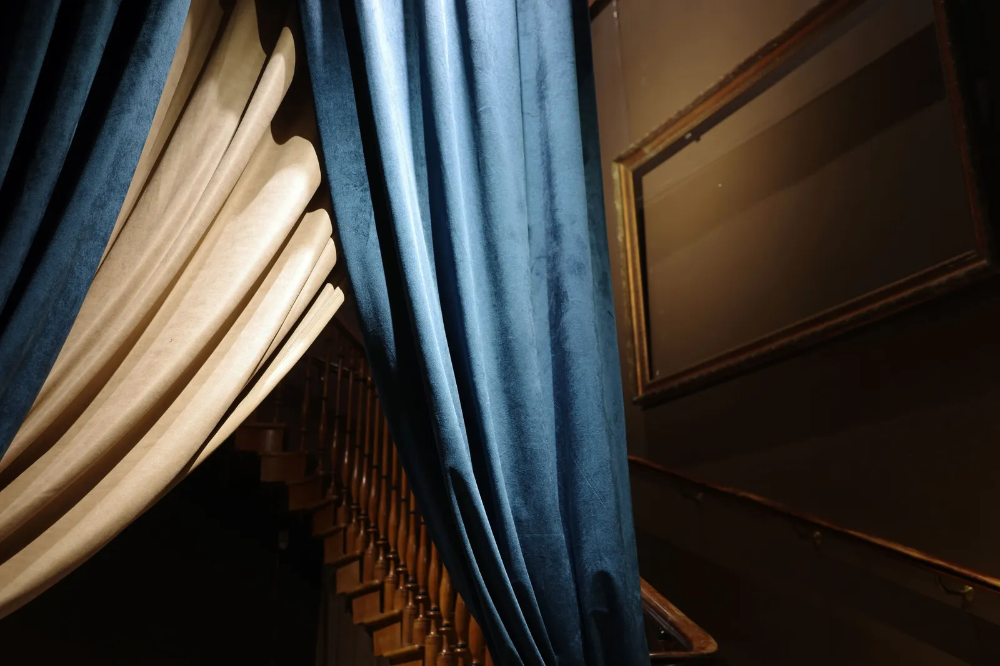
The necessity of such a thorough codification became obvious from bitter past experiences. During WWII, the collection was evacuated as well — to Ufa, Russia, via Tashkent, Uzbekistan. “When the collection was evacuated from Odesa to Tashkent, there was one number of items. When it was transferred from Tashkent to Ufa, the number was different”, Volodymyr explains. In one instance, the number even grew: “For example, 523 items departed from Tashkent, but 800 items arrived in Ufa for some reason. We have no idea why or where they were found. The final number of exhibits is still unknown and is a subject of research”.
Later, parts of the collection were exchanged between different museums without any systematic approach. “For example, before the war, an item was in the Odesa State Art Museum (currently, the Odesa Museum of Western and Eastern Art), and after the reevacuation, it ended up in our collection, and vice versa. Art objects somehow ended up even in sanatoria. In 1945, following the decision of the Soviet government and local authorities on the return of museum exhibits, a revision of state institutions was conducted in Odesa. An order was issued requiring the return of artistic works and valuables to museum funds from sanatoria, state vacation resorts, and city organizations, where they ended up during the war or some months after,” Volodymyr adds.
And during the evacuation of German and Romanian troops, many items from the collection were taken to Romania and Germany. “Unfortunately, we still lack information on some of the items. Do they still exist? Did they perish during the transfer? Are they in private collections? Fortunately, some of them were returned after the war. Say, the ‘Spring’ piece by Herasym Holovkov, our local Odesa artist. Some of the works from the pre-war collection were returned to the museum, but for some, their location is still unknown, unfortunately,” Volodymyr Damaskin says.
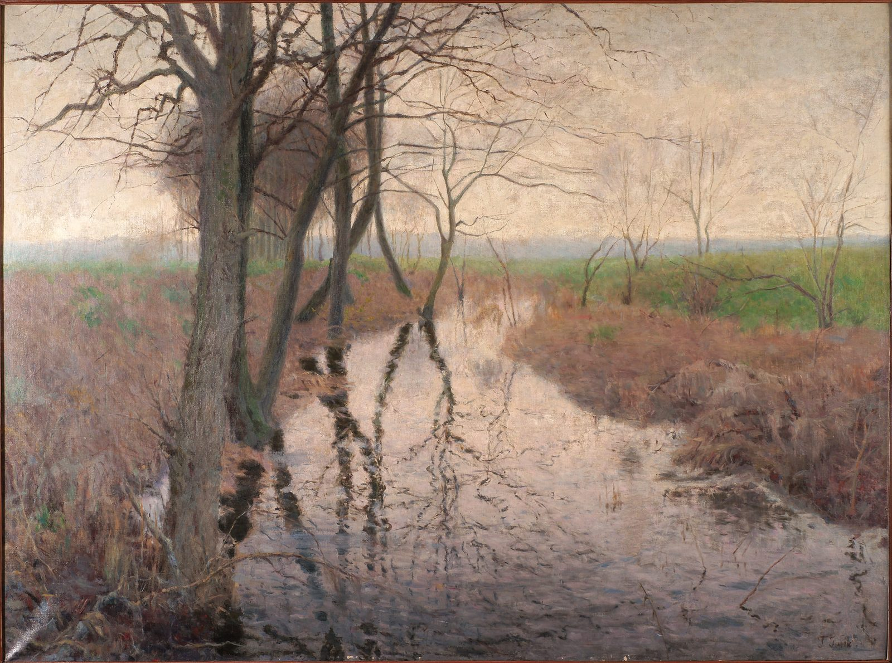
“If we are talking about objects that aren’t directly art-related, we had knight armor in our collection. We cannot determine its current location either, unfortunately. Neither do we for a large collection of applied arts that was donated to us before WWII. I hope, in the near future, we will investigate where it remained and where it is stored, because it’s a relatively fragile material; unlike those works, canvases or sculptures are easily conserved and can be quickly evacuated. Odessa was besieged at that time. And of course, a large part of applied art objects remained then in Odesa, and later, representatives of the occupying authorities and Romanian-German military either took it home as an item for their interior, or took it away after 1944, when they understood that Soviet troops were approaching the city”.
The situation was further complicated by the loss or damage of some inventory books and other documentation, and some of them are in limited-access archives. And the works themselves are difficult to identify because of the vagueness of the records: “Say, in an inventory book, a ‘Landscape’ piece by Aivazovskyi is recorded. But there could be dozens of paintings titled ‘Landscape’. Nowadays, it’s all a bit easier because a large proportion of the artist’s works are digitized. But at that time, you didn’t have the possibility to take a photograph with you and ask around, ‘Is this our work or not?’”
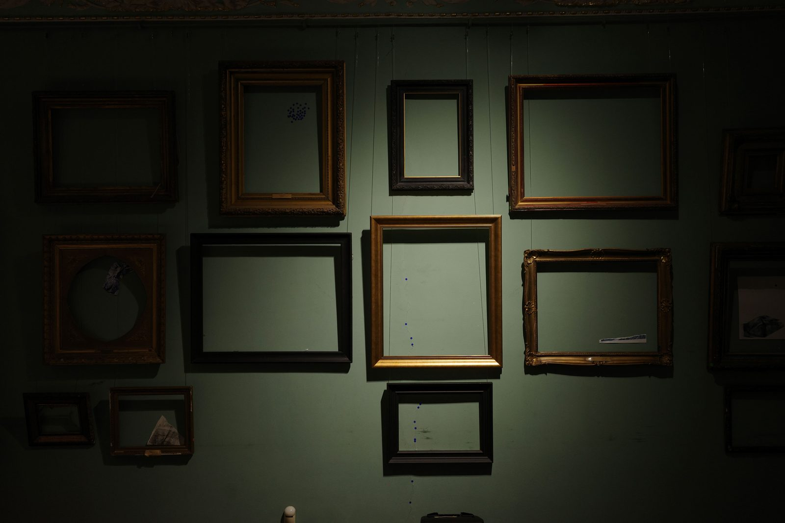
During the full-scale invasion, all the museum’s departments were involved in the evacuation; they ensured that each exhibit from a shelf in the vault was packaged in its own specific crate.
“The experience of WWII, especially the siege of the city in 1941, gave us a clear understanding of the necessity to prepare for the evacuation in advance,” Volodymyr Damaskin says.
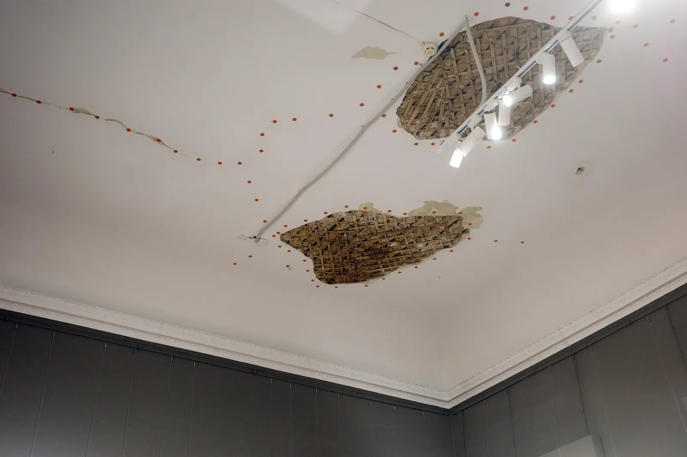
This way, they have taken all the items away and are now working with their digital copies. “When I came to the museum, I was surprised to find that we had photo documentation of the vast majority of the collection. Thanks to that, we are able to continue work on our research projects,” Oleksii Voronko says. Today, a couple of thousand items from the museum’s collection are available for everyone to see in an open online catalog.
Old walls, new senses
Now that the exhibits are evacuated, the museum is busy digitizing the archive — photos and documents — and adding earlier-digitized items to internal databases and to the digital Register of the Museum Fund of Ukraine, with the help of grant funding. “Idealism is a good thing, of course, but people need to eat,” Oleksii says.
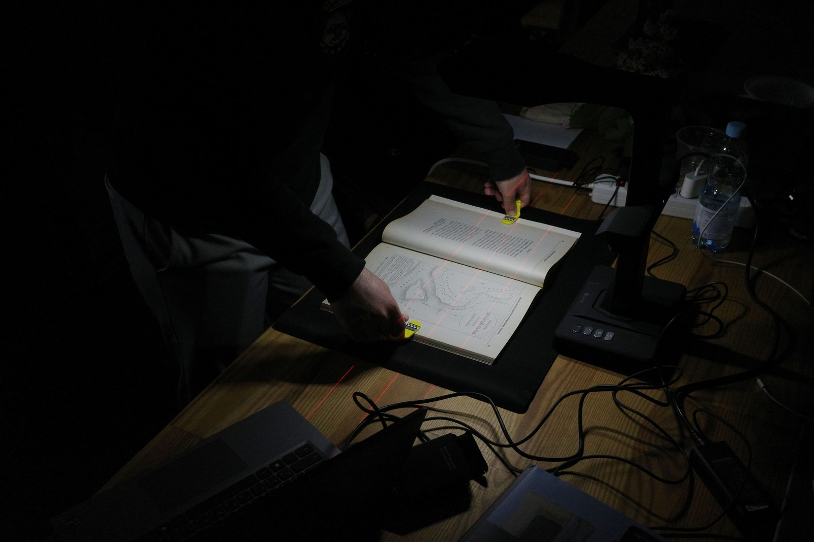
However, the museum still needs a display, as the employees realized. So, new exhibitions here are based on archival discoveries. “In 2022, we faced a situation where we had empty walls,” Volodymyr Damaskin remembers.
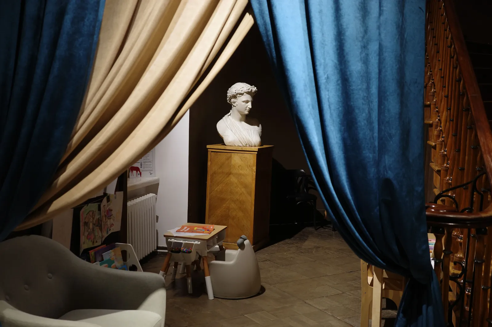
So, in 2022–2023, the museum reopened with the “Before the War” exhibition (new acquisitions from 2021 were displayed, replacing the old exhibition) and the “Languages of War” cycle. Archiving, studying, and displaying Ukrainian visual art created during the current war became a priority.
The museum’s experts also began researching the history of the Odesa school of painting, and in 2025, they created a display based on materials from the Odesa Art College, founded in 1865. Materials from the archive had to be restored because they were stored in the college’s vault and weren’t in good condition. But the college’s activities are closely connected to the museum: works by many artists who worked or studied there are in the museum's collection.
Work on this exhibition took half a year, and it opened in 2025.
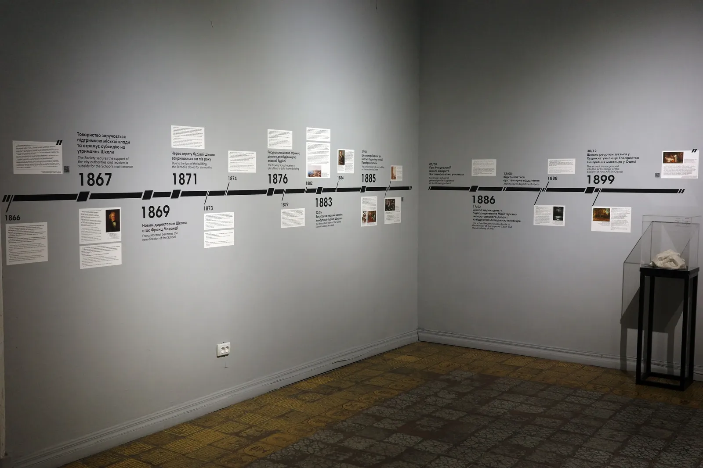
“It encompasses almost the entire period of the college’s operations, from the foundation to the first years of Ukraine’s independence. The core idea behind this exhibition is to show how changes in ideology affected the college. How the society changed, how artists changed, not only in the college, but more broadly — in Odesa, in Ukrainian art,” guide Yelizaveta Klimenkova explains.
Changes are indeed very visible: from a classical academic school with invited French, Italian, and German professors to vases featuring Stalin’s portraits and numerous paintings depicting labor at collective farms.
“When we were preparing the exhibition, we discussed whether we should display so many depictions of collective farms, because they are all more or less the same, and one would suffice. But we decided to underline just how widespread it was,” Yelizaveta says.
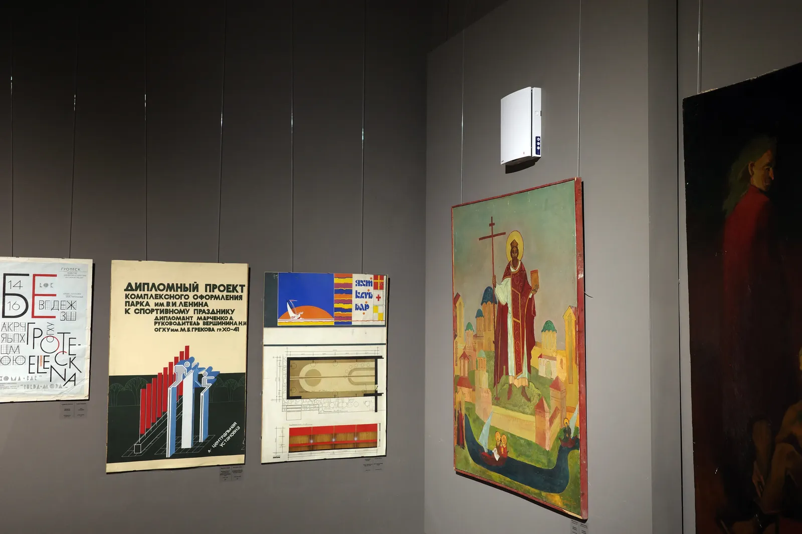
In the 1950s to 1970s, after Stalin’s death, individual style appeared in students’ works. Students who were interested in the modernist movements contemporary with them and were oriented toward European art, and those who, despite the ‘general party line²’, were trying to find their own path in art, started to form a separate circle. For example, there was a non-sanctioned “Sychyk + Khrushch” exhibition on the fence of the Opera House: two friends, Valentyn Khrushch and Stanislav Sachkov, displayed their works there. The exhibition wasn’t large, and it was taken down in a couple of hours, but still, it became an important gesture because it caused confusion among the local authorities.
Some modernists were expelled from the college, some abandoned their studies on their own, and some completed their studies. But it was hard to survive outside the system; without membership in the Artists’ Union, opportunities to earn money were close to none. Only in the 1980s to 1990s did true liberty come: artists gained access to grant funding, sold their paintings abroad, and could fully realize their potential.
A room made of glass
The museum’s history has a wealth of pages still unexplored by the visitors. Among them is a collection of unique century-old glass photo negatives that remained unnoticed for a long time. Their main hero is Zwi Emskyi-Mohylevskyi, the former director of the museum.
In the 1920s, he introduced changes that turned the museum from a gallery for a small circle of enthusiasts into a public space with tours, educational programs, and a new display logic. It can be felt from the photos; their reproductions are now part of the “Museum History” exhibition. On some of them, people are standing among the paintings, arguing, moving the frames.
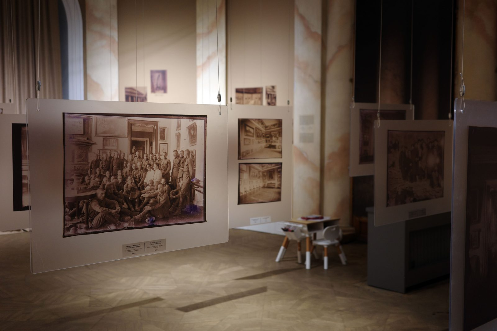
That the glass plates didn’t shatter or disappear is a miracle. They were rediscovered in the 1970s and 1980s and digitized in 2021. From then on, they waited for their moment of fame, and now they allow visitors to see items that haven’t been on display in the museum’s halls for a long time. Some paintings exist now only on those glass plates. For example, some works of the avant-garde: the researchers recognized lost works by Vasyl Kandinskii and Oleksandra Exter on the negatives.
“In 1938, there was an order to liquidate or hide in the special fund³ all the formalistic art”, Volodymyr Damaskin explains. “From those times, unfortunately, only one work remains: ‘In the Pub’ by Synezubov has survived the terror.”
Unlike the photo negatives, Zwi Emskyi-Mohylevskyi’s life didn’t last long. At the end of the 1920s — the beginning of the 1930s, the cultural climate in the USSR changed dramatically. The avant-garde was gradually ousted, museum experiments were wrapping up, and many cultural figures were labeled politically untrustworthy. They found a pretext for repression against Emskyi-Mohylevskyi, too: he communicated with foreigners, they said (which, in normal circumstances, isn’t unusual for a museum director). So, in 1937, he was arrested and later executed.
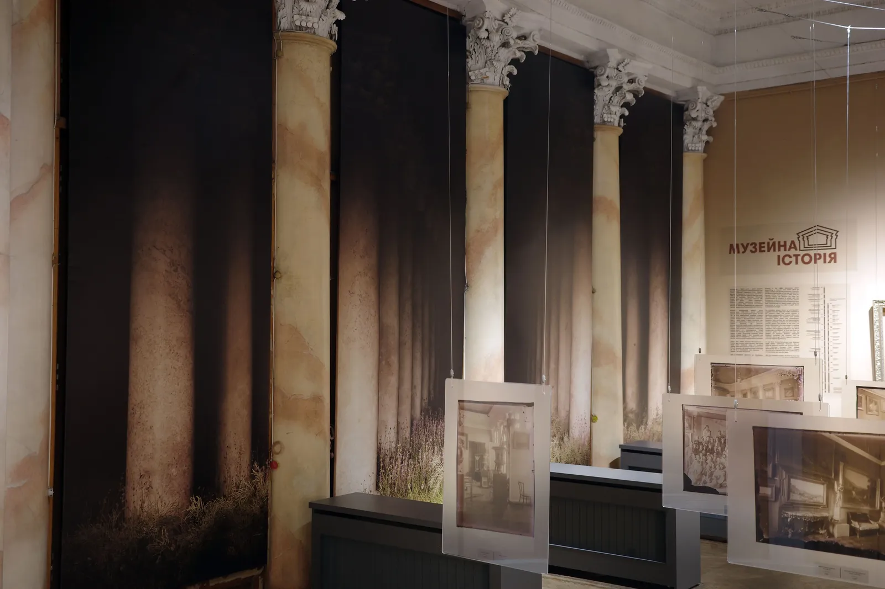
Museum employees compare the reforms of Emskyi-Mohylevskyi to the work of Oleksandr Roitburd⁴ in the same position. There’s a distance of almost a century between them, but here, in this display, their paths cross.
Emskyi-Mohylevskyi actively expanded the collection; he traveled to Moscow and Saint Petersburg and literally fought to acquire artworks for the museum. Roitburd also took every opportunity to bring contemporary Ukrainian art and new projects to the museum.
Both Emskyi-Mohylevskyi and Roitburd were working during a shift in the societal paradigm. For the former, it was the early Soviet Union, for the latter, Ukraine after the Revolution of Dignity⁵, which was reconsidering its own identity and the role of culture in society. In both cases, the museum became a battlefield in shaping the city's cultural memory.
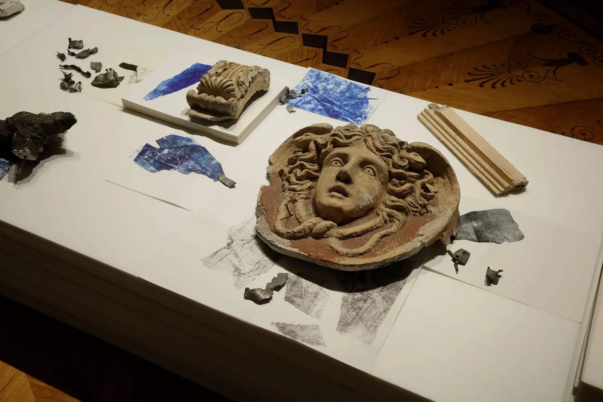
A strong shaky foundation
In the hall next to the rescued century-old photo negatives, fragments of the museum building are displayed as a reminder of the destruction after the Russian attack. They became artifacts for the “Museum of Forgetting” exhibition, which reflects on the collective and individual memories of Odesa and its citizens in the context of the full-scale war.
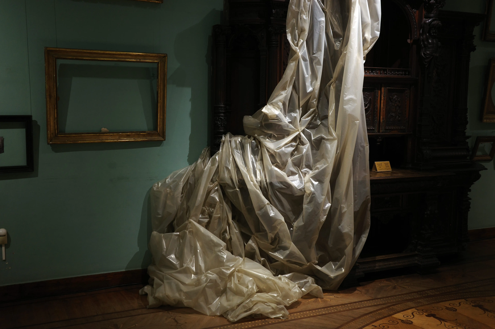
“When the strike happened, we didn’t know in what condition the building was,” Kateryna Kharchenko, the Lead Spokesperson of the museum, remembers. To accurately assess the damage, a thorough examination is needed. Currently, they have only stabilized the structure, and no major restoration work is underway yet. “We had discussions about leaving the building unrestored until the victory, because it’s located close to the port (which is often the target of drone and missile strikes — transl.). But currently, we are planning a restoration,” Kateryna explains.
The attack happened on November 5, 2023, on the museum’s birthday. “There was a big hole along the street; the fence was bent. Today, the museum looks much better. It was a huge amount of work: collecting all the fragments, putting them into separate boxes, and labeling everything with what came from where. And then, the stabilization.” But the museum fully reopened on February 15 and hasn’t closed its doors since.
“Currently, our windows are still barred; there’s barbed wire in some places. A lot of people even think that we are closed. But in fact, we are waiting for everyone to visit,” Kateryna says.
Footnotes
1. The first massive Russian air raid started around 4 a.m. February 24, 2022, initiating the full-scale invasion. Many Ukrainian cities were targeted with missile strikes at once.
2. In Soviet times, the "general party line" was a phrase used to describe the current ideological direction of the ruling Communist Party in the USSR at any given time.
3. In Soviet times, there were so-called special funds in libraries, museums, and other institutions where books and artworks that didn't fit the Party's ideology were stored. Access to these funds was severely restricted.
4. Oleksandr Roitburd is one of the most prominent artists from Odesa who was active in independent Ukraine. He was the director of the Museum from 2018 to his death in 2021.
5. In 2013-2014, there were massive ongoing protests against the policies of the pro-Russian president Viktor Yanukovych and his government that lasted for many months. Yanukovych fled to Russia as a result, and the event became known as the Revolution of Dignity. As Yanukovych fled, Russia annexed Crimea and started the war in Donbas, and it was a time of big shifts in the collective mind of Ukrainians.
The reportage is published with the support of the Alfred P. Sloan Foundation.